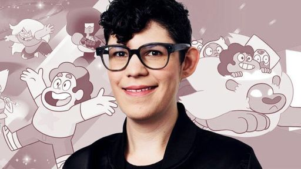

Steven Universe

Rebecca Sugar es la creadora de Steven Universe. Es una artista, compositora, y directora la cual es mayormente reconocida por su trabajo en Hora de aventura.En 2012, Cartoon Network dio luz verde a Steven Universe, haciéndola la primera creadora femenina en solitario de una serie animada en la historia de veintiún años del canal. Rebecca fue uno de los artistas de storyboard en Hora de aventura hasta la quinta temporada, donde se fue para crear Steven Universe, aunque luego regresó nuevamente en 2015 en la miniserie Estacas para componer la canción "Todo se queda" y hacer la voz de la madre de Marceline.